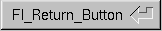

Class Hierarchy
Fl_Button
|
+----Fl_Return_Button
Include Files
#include <FL/Fl_Return_Button.H>
Description
The Fl_Return_Button is a subclass of Fl_Button that
generates a callback when it is pressed or when the user presses the
Enter key. A carriage-return symbol is drawn next to the button label.

Methods
Creates a new Fl_Return_Button widget using the given
position, size, and label string. The default boxtype is FL_UP_BOX
.
Deletes the button.